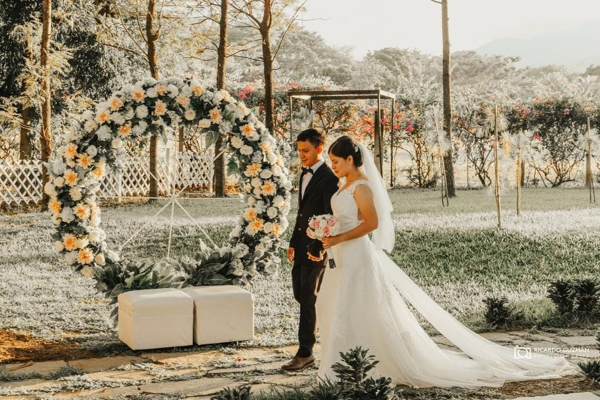
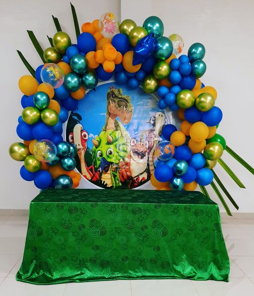
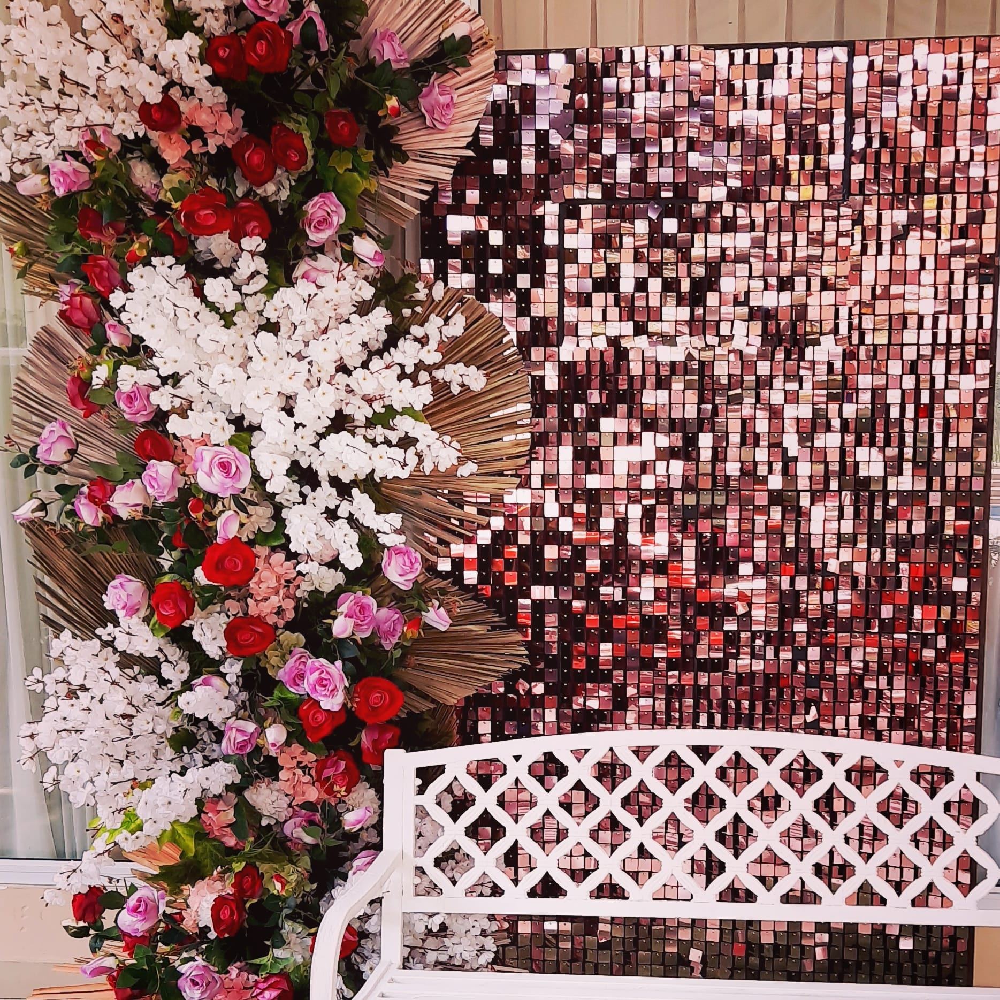
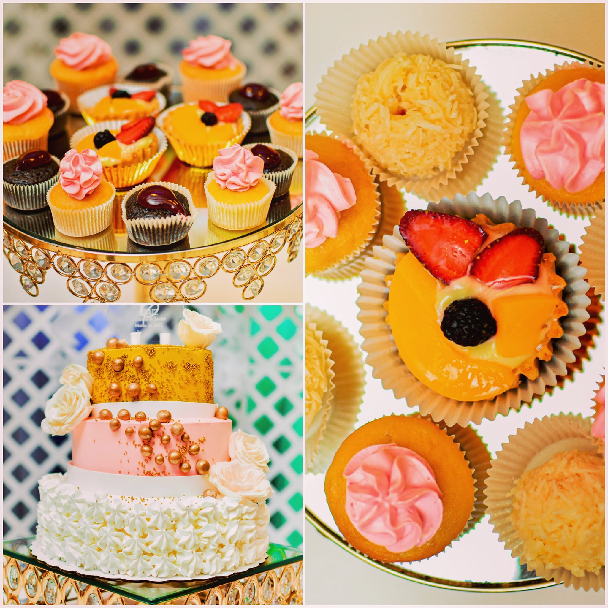
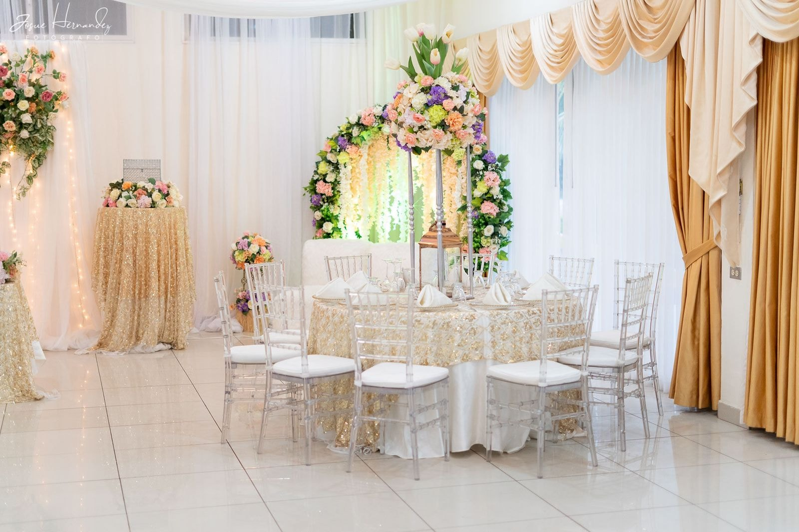
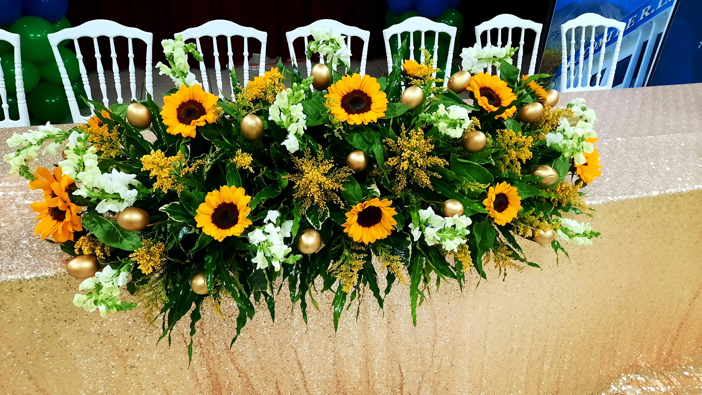
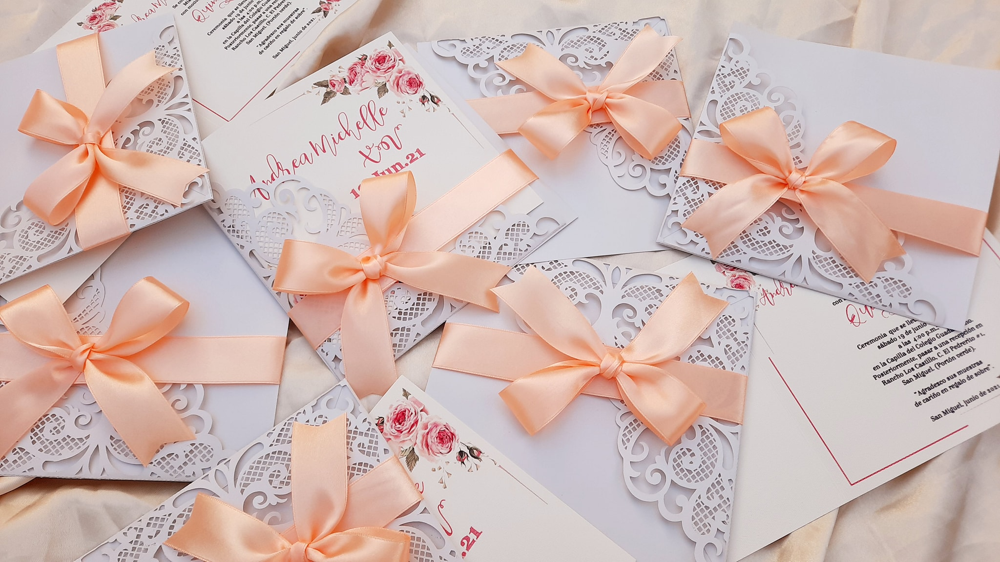
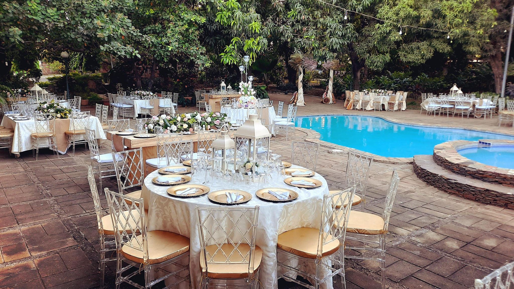
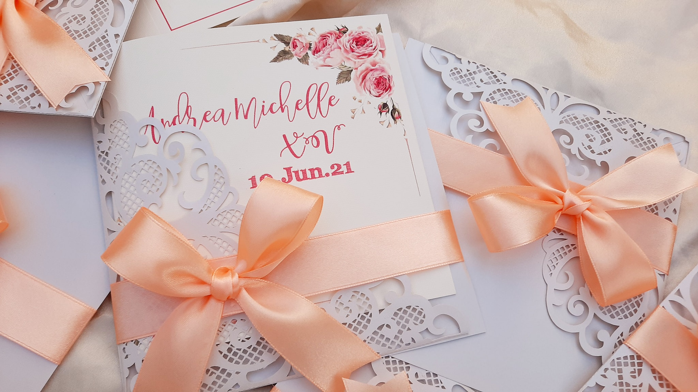
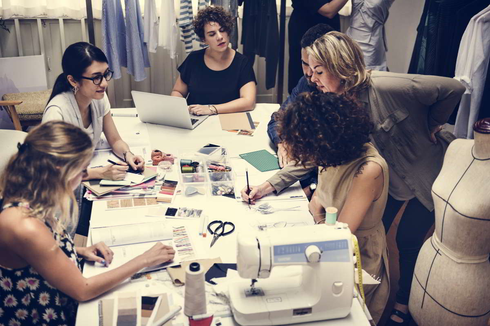

Ponemos especial interés en desarrollar los conceptos mediante el dialogo con nuestros clientes,
la reflexión contante y el intercambio de experiencias. Buscaremos siempre el valor añadido para los diseños que necesitas.
Hacemos de los proyectos elementos únicos y totalmente personalizados, poniendo especial atención en la resolución al detalle y teniendo en cuenta aspectos que van desde
la materialidad y distribución espacial, hasta el mobiliario o el diseño corporativo y de marca. Uno de los aspectos clave para la creación de este tipo de proyectos es que el resultado final debe de transmitir una idea, concepto o sensación.
A partir de un exhaustivo análisis de cada situación en particular, y con una interacción constante junto a nuestros clientes, se podrán establecer así, las condiciones que podrán determinar
la mejor solución a adoptar en cada caso y qué acciones a poner en marcha en cada momento.


Cuando empezamos a organizar fiestas de cumpleaños una de las cosas que debemos tener en cuenta es la decoración de cumpleaños que vamos a usar para dar estilo y glamour a nuestra celebración.
Hoy en día, la decoración es tendencia en prácticamente todos los aspectos de nuestra vida,
y es que conseguir un escenario bonito para cualquier ocasión, ¡es un placer indescriptible!

Variedad infinita de tipos de arreglos florales. Hemos seleccionado algunos que consideramos más relevantes. Estos son los arreglos florales para cumpleaños,
arreglos florales sencillos, arreglos florales modernos, arreglos florales minimalistas,
arreglos florales innovadores, arreglos florales para restaurantes, arreglos florales para bodas, arreglos florales navideños y arreglos florales elegantes, entre muchos otros.

Al igual que los condimentos, la decoración puede aportar un nuevo matiz de sabor que realce o contraste, pero a diferencia de éste,
su función es principalmente estética.En pastelería y en confitería, la decoración desempeña un papel particularmente importante, y el trabajo del azúcar (estirado, hilado, torcido, etc.) permite todo tipo de decoraciones.

Combinar elementos , adornos y colores, es un arte que permite conseguir la estética excepcional de una boda. En otras palabras, diseñar espacios interiores ó al aire libre es diseñar la completa experiencia de casarse.
Se trata de una construcción que evoluciona con rapidez. Por eso anualmente hay cientos de nuevas propuestas o simplemente las ideas preliminares dan paso a nuevas tendencias para la producción de bodas.
Así es como nosotros le apostamos a tu ingenio y creemos que con un buen plan todo es posible.
Una de las mayores preocupaciones en la organización de una fiesta de 15 años, es sin duda, la decoración del lugar. Si ya tienes algunas ideas para tu fiesta, entonces debes ir pensando en qué detalles decorativos utilizar.
En esta oportunidad te daremos algunos
consejos para conocer los elementos básicos que no pueden faltar en la decoración de tus 15 años.




Decoraciones Migueleñas
Somos una empresa dedicada al servicio integral de decoración de interiores. Nuestro éxito se basa en la adaptación de nuestro trabajo a cualquier bolsillo, te ayudamos a rentabilizar tu presupuesto.
Amantes de nuestra profesión, y en permanente contacto con ustedes,
les asesoraremos y crearemos cada detalle de sus proyectos. Nos caracterizamos por cuidar cada detalle y lograr así la satisfacción de nuestros clientes.
Hacemos de su fiesta o evento un día inolvidable…
Así mismo, la empresa podrá ejercer actividades directamente relacionadas, afines o conexas a la actividad empresarial descrita anteriormente.
De igual forma, se entienden incluidos en su objeto, los actos que tengan como finalidad ejercer los derechos o cumplir las obligaciones,
legal o convencionalmente derivados de la existencia y actividad de la empresa. Evite soluciones estandarizadas. Nuestro objetivo es ofrecer diseños a medida para hacer de sus proyectos piezas únicas e irrepetibles.

Además, cada área de trabajo debe estar alineada a las necesidades de los usuarios y ser multifuncional,
pensando en que estos requieran mayor espacio para realizar sus tareas o se integren nuevos empleados.